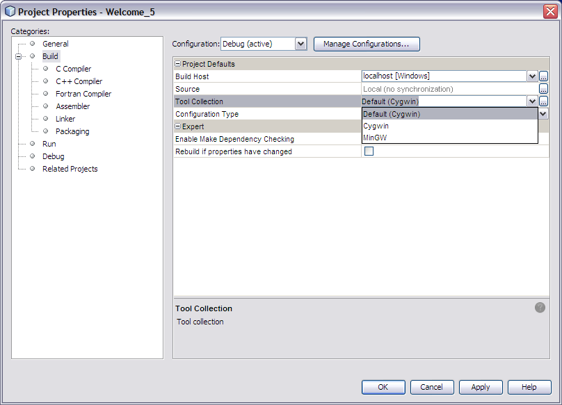

Apache NetBeans (incubating)
Apache NetBeans (incubating)Just released!
定义 C/C++ 项目的开发环境
| This tutorial needs a review. You can help us review it. |
2014 年 3 月 [修订版本号：V8.0-1]
下面的简明教程将为您介绍在 NetBeans IDE 中构建和调试 C 或 C++ 项目时选择构建主机和工具集合的一些基本步骤。

Figure 1. 此页上的内容适用于 NetBeans IDE 7.3 及更高版本
要求
要学习本教程，您需要具备以下软件和资源。
| 软件或资源 | 要求的版本 |
|---|---|
NetBeans IDE |
|
Java 开发者工具包 (JDK) |
有关下载并安装所需软件的信息，请参见 NetBeans IDE 安装说明。
安装工具集合
NetBeans C/C 模块至少需要 C 编译器、C 编译器、make 实用程序和 gdb 调试器。有关安装并配置所需编译器和工具的说明，请参见配置 NetBeans IDE 以使用 C/C+/Fortran+。
指定构建主机
可以在本地主机（从中启动 IDE 的系统）或运行 UNIX® 操作系统的远程主机上构建、运行和调试项目。只有运行 Oracle Solaris 和 Linux 操作系统的远程构建主机经过了测试。初始情况下，IDE 设置为仅使用本地主机。
可通过以下几种方式定义远程构建主机：
-
使用“服务”窗口：选择“窗口”>“服务”，然后右键单击“C/C++ 构建主机”并选择“添加新主机”。
-
右键单击项目，选择“设置构建主机”>“管理主机”，然后在“构建主机管理器”对话框中单击“添加”。
-
使用“选项”窗口：选择“工具”>“选项”> "C/C++" >“构建工具”，然后单击“构建主机”列表旁边的“编辑”按钮。
有关更多信息，请参见 C/C+ 远程开发教程+。
使用工具集合列表
工具集合列表显示对本地主机和每个远程构建主机上的 IDE 可用的工具集合。您可以通过以下任何方式查看工具集合：
-
使用“服务”窗口：选择“窗口”>“服务”，展开“C/C++ 构建主机”以及您感兴趣的主机。“工具集合”节点将列出该主机上可用的工具集合。
-
使用“项目”窗口：右键单击项目，选择“属性”，然后单击“构建”类别。您可以选择一个工具集合以用于项目，或者单击“工具集合”列表旁边的按钮，打开“工具集合管理器”以设置默认集合以及添加或删除工具集合。
-
使用“选项”窗口：选择“工具”>“选项”> "C/C++" >“构建工具”。在“构建主机”列表中选择主机之后，您可以在此属性表单中管理工具集合。
每种情况下，“工具集合”列表都将显示在“构建主机”列表中当前选定的主机上找到的集合。默认集合以粗体列出，并且对于使用构建主机创建的任何新项目，都会选用该集合。可以在项目属性中更改特定项目的工具集合。
更改默认工具集合
要更改默认工具集合，请从工具集合列表中选择一个集合，然后单击 "Default"（默认）。对于使用选定的构建主机创建的任何新项目，都将选择新的默认工具集合。
向构建主机添加工具集合
添加工具集合后，便可使编译器可供 IDE 使用。工具必须已经安装到系统上。
要添加与构建主机关联的工具集合，请执行以下操作：
-
在 "Services"（服务）窗口中，展开要添加集合的 "C/C Build Host"（C/C 构建主机）的节点。
-
右键单击 "Tool Collections"（工具集合）节点并选择 "Add New Tool Collection"（添加新工具集合）。 也可以通过单击 "Tool Collection"（工具集合）列表下方的 "Add"（添加）按钮，从 "Tools"（工具）> "Options"（选项）> "C/C++" > "Build Tools"（构建工具）标签添加集合。
此时将打开 "Add Tool Collection"（添加工具集合）对话框。

-
在 "Add New Tool Collection"（添加新工具集合）对话框的 "Base Directory"（基目录）字段中，键入该工具集合的可执行文件的目录路径，或使用 "Browse"（浏览）按钮导航至该目录（通常称为
bin）。 -
如果路径有效，将自动填充 "Tool Collection Family"（工具集合系列）和 "Tool Collection Name"（工具集合名称）。可以为集合指定在 IDE 中显示的不同名称。如果更改 "Tool Collection Family"（工具集合系列），请确保您指定的系列是该集合的正确系列，否则编译器标志可能无效。
-
单击 "OK"（确定）。
新工具集合将添加到 "Tool Collection"（工具集合）列表中。
更改项目的工具集合
在创建项目时，将选择当前的默认工具集合作为该项目的工具集合。您可以将项目的工具集合更改为集合列表中的其他集合，或者也可以专门为该项目定制工具集合。
要为现有项目选择不同的工具集合，请执行以下操作：
-
右键单击“项目”窗口中的项目节点，然后选择“属性”。
-
在 "Project Properties"（项目属性）对话框中，选择 "Categories"（类别）列表中的 "Build"（构建）节点。
-
在构建工具属性中，确保 "Build Host"（构建主机）设置为要在其上执行构建操作的主机。
-
从 "Tool Collection"（工具集合）下拉列表中选择一个集合。

-
单击 "OK"（确定）。
下次构建项目时，将使用选定的工具集合。
另请参见
有关在 NetBeans IDE 中使用 C/C/Fortran 进行开发的更多文章，请参见 link:https://netbeans.org/kb/trails/cnd.html[+C/C 学习资源+]。
link:mailto:users@cnd.netbeans.org?subject=Feedback:%20Defining%20Your%20C/C+%20Project's%20Development%20Environment%20-%20NetBeans%20IDE%207.3%20Tutorial[+发送有关此教程的反馈意见]